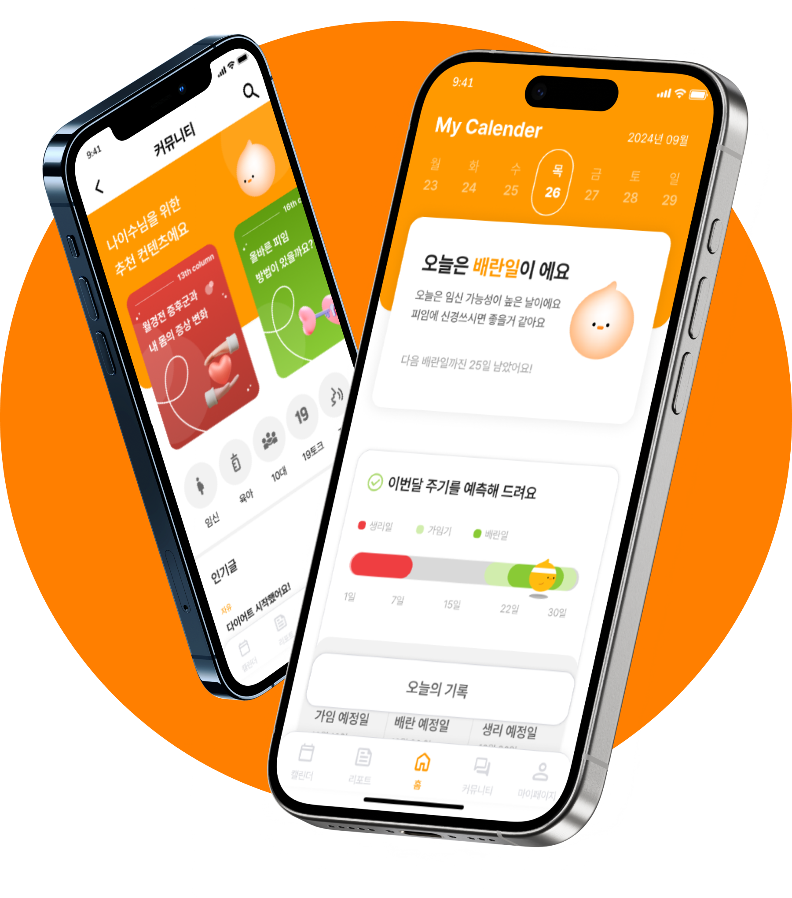

UXUI RENEWAL
한눈에 확인하는 월경 주기여성 생리 달력
팀 프로젝트
2024.09.10 - 2024. 10. 15
캐릭터, 발표자료, 프로토 타입 제작

MY
CALENDER
UXUI RENEWAL
한눈에 확인하는 월경 주기
팀 프로젝트
2024.09.10 - 2024. 10. 15
캐릭터, 발표자료, 프로토 타입 제작
MY
CALENDER
여성 생리달력은 월경주기와 배란일, 가임기를 쉽게 예측하고 관리할 수 있도록
도와주는 어플리케이션입니다. 여성생리달력 사용자의 이야기를 들어보고
불편사항을 반영해 더욱 편리하게 리뉴얼했습니다.
연령별 검색 비율을 살펴보면 20대와 30대의 검색 비율이 높고
생리 주기를 계산하는 방법과 불규칙한 생리주기에 대해 궁금증을 가지고 있습니다.
블랙키위_검색키워드
Pretendard
Round:16px
주요 컨텐츠 상자
Round:32px
Button
PRIMARY #FF9900
SECONDARY #AEDA74
SECONDARY #EF3E41
BLACK #000
WHITE #FFF
더 편한 월경 관리 어플
여성 생리 달력
기존의 제공중인 서비스 파악이 어렵고 사용성이 떨어지는 레이아웃을 바꿔
사용자가 어플을 더 쉽게 파악하고 이용할 수 있도록 제작했습니다.
어플 접속 시 오늘의 상태와 주의 사항에
대한 안내를 받을 수 있습니다.
주기 예측 그래프를 통해 이번달 예상주기와
가임기, 배란일을 한눈에 확인할 수 있습니다.
월경 분석을 통해 현재 등급을 파악하고 평균
월경 기간과 주기를 안내해드립니다.
기간과 주기 한눈에 파악 및 변화 체크 가능
월경 관련 이야기를 들을 수 있는
곳은 없을까요?
누구와도 이야기 하지 못했던 나만의 고민, 알고싶은 정보들
이제 고민하지 마시고 여성 생리 달력에서 해결하세요!